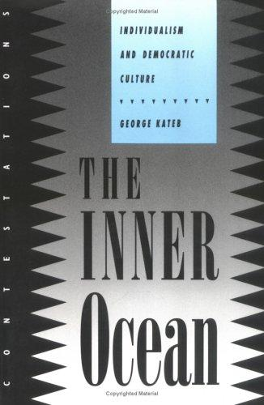
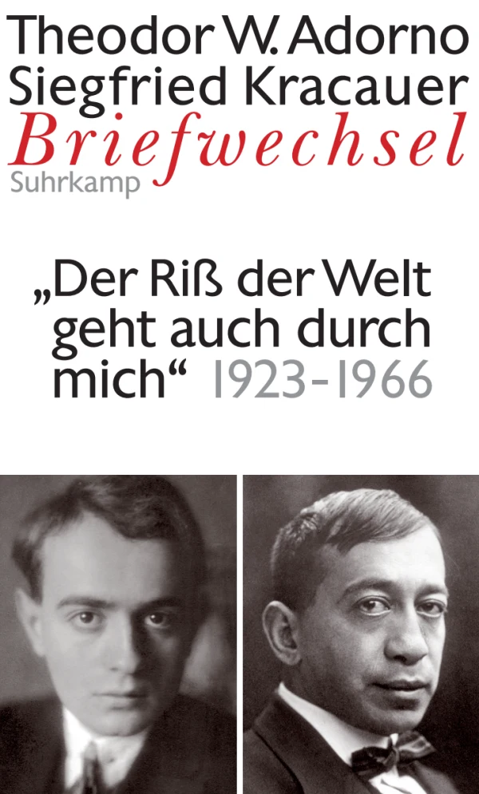

45:46 · 8 OPERE
George Kateb e la teoria dei diritti individuali.
Il filo del discorso
Il relatore presenta The Inner Ocean di George Kateb come punto di partenza per ripensare il rapporto fra individualità e democrazia. Distingue la difesa della dignità personale da un individualismo ridotto al vantaggio privato e legge la cultura come formazione di una consistenza interiore capace di resistere alla obbedienza opportunistica. Il discorso attraversa una massima di Hillel, la corrispondenza Adorno–Kracauer, Il mago di Oz e la tradizione americana dei diritti. La parte centrale applica questa prospettiva alla pandemia e alle decisioni giudiziarie, con una forte polemica contro media e istituzioni. Seguono considerazioni sulla scrittura della storia e un richiamo alle inchieste su Kennedy. Tornando a Kateb, la conclusione insiste sul cittadino come persona, distinta da massa, strumento o soggetto da amministrare. La scheda separa la argomentazione del libro dalle applicazioni del relatore, che dichiara anche punti di disaccordo con l’autore, e distingue critica politica, testimonianze e fatti documentati.
I libri nel discorso

The Inner Ocean. Individualism and Democratic Culture
Copertina: Cornell University Press, Contestations, 1992. Copertina della brossura ISBN 9780801480140; cataloghi bibliotecari descrivono XI–274 pagine. La rilegata ISBN 9780801427350 è distinta e il distributore ne indica 288 pagine complessive. Copertina autentica in inglese, senza inventare una traduzione italiana; dieci saggi.
Immagine autentica dell’opera, controllata visivamente; l’edizione di riferimento non è attribuita al filmato.
Titolo tradotto, George Kateb, Cornell e 1992 espliciti. Il libro è The Inner Ocean, non una edizione italiana accertata.
Passaggio 0:15 ↗ · Fonti e libro ↗
Pirqè Avòt (Massime dei Padri)
Identificazione probabile
Copertina: Copertina Massime dei padri. Pirké Avòt. Con traduzione a fronte, commenti, schede tematiche e racconti, Giuntina, Fuori collana, 2021, illustrazioni di Boris Shapiro, introduzione di Shalom Hazan, prefazione di Riccardo Di Segni, ISBN 9788880579014.
Copertina autentica illustrata con albero, figure di maestri e grande titolo ebraico Pirqè Avòt; immagine intera della scheda ISBN. Il titolo italiano non è sovrapposto artificialmente alla grafica. Hillel è autore della massima citata, non dell’intero trattato; Shapiro è illustratore, non autore antico. L’edizione moderna non viene attribuita al contributo.
Massima di Hillel sul non essere per sé: collegamento probabile a Pirqè Avòt 1,14, titolo non pronunciato.
Passaggio 5:03 ↗ · Fonti e libro ↗
Briefwechsel 1923–1966. Der Riß der Welt geht auch durch mich
Identificazione probabile
Copertina: Briefe und Briefwechsel, volume 7, a cura di Wolfgang Schopf, Suhrkamp, 19 novembre 2008, 772 pagine, ISBN 9783518584965. Corrispondenza 1923–1966, 269 lettere secondo il catalogo. Copertina autentica con i due ritratti, titolo e sottotitolo, non attribuita alla copia del relatore.
Immagine autentica dell’opera, controllata visivamente; l’edizione di riferimento non è attribuita al filmato.
Adorno e corrispondenza con Kracauer nominati; formula affine al sottotitolo della edizione Suhrkamp, lettera e pagina non individuate.
Passaggio 8:27 ↗ · Fonti e libro ↗
Il mago di Oz
Copertina: BUR Ragazzi · 2000
Immagine autentica dell’opera, controllata visivamente; l’edizione di riferimento non è attribuita al filmato.
Il mago di Oz e Baum espliciti; si distingue il libro dal ricordo di una battuta della versione cinematografica.
Passaggio 12:11 ↗ · Fonti e libro ↗
La Repubblica
Identificazione probabile
Copertina: Laterza · La Repubblica · edizione con testo a fronte di riferimento
Immagine associata all’ISBN di riferimento e controllata visivamente; edizione e traduzione non identificate come quelle citate o lette nel video.
Potere a chi non lo desidera: probabile riferimento alla Repubblica, senza titolo o passo letterale indicati.
Passaggio 16:25 ↗ · Fonti e libro ↗
Dichiarazione d’indipendenza degli Stati Uniti d’America
Facsimile: incisione di Stone del 1823: Documento del 4 luglio 1776 · incisione di William J. Stone del 1823
Riproduzione documentaria dell’incisione di Stone del 1823 conservata dai National Archives. Non è la pergamena originale del 1776, né la copertina di un libro.
Vita, libertà e ricerca della felicità, attribuite a Jefferson: passo della Dichiarazione di indipendenza, pur chiamata Costituzione nel parlato.
Passaggio 19:35 ↗ · Fonti e libro ↗
Countering Criticism of the Warren Report
Identificazione probabile
Prima pagina del dispaccio: PRIMA PAGINA DEL DISPACCIO, riprodotta dalla pagina 3 del PDF archivistico, dopo due pagine descrittive. Sono visibili il titolo, la sigla di dispaccio BD5847, l’annotazione manoscritta 1035-960, la data dattiloscritta 4/1/67 e il timbro 24 JAN 1967. Si conserva la discordanza materiale delle date; la scheda archivistica indica 4/1/1967. Filigrana Mary Ferrell Foundation. Non è una copertina libraria.
Facsimile della prima pagina effettiva, pagina 3 del PDF; schede di catalogo escluse dall’immagine. Date e annotazioni riprodotte senza correzioni.
Documento già mostrato sul canale relativo alle critiche al rapporto Warren: collegamento probabile alla voce esistente, titolo non pronunciato.
Passaggio 34:25 ↗ · Fonti e libro ↗
Die verblödete Republik. Wie uns Medien, Wirtschaft und Politik für dumm verkaufen
Identificazione probabile
Copertina: Knaur eBook, 15 gennaio 2010, 336 pagine nel catalogo, ISBN 9783426400555; copertina digitale ufficiale. Edizione cartacea originale Knaur 2009, ISBN 9783426780985, catalogata con 318 pagine. Non si equiparano automaticamente le paginazioni dei due formati.
Copertina autentica Knaur: fondo bianco, aquila capovolta, nome giallo e titolo rosso. È la copertina ufficiale dell’eBook 2010, non un’immagine riconosciuta nel filmato come esatto esemplare 2009. Il libro non viene presentato come disponibile in traduzione italiana.
Thomas Wieczorek con titolo reso La società istupidita: probabile richiamo all’opera già presente Die verblödete Republik; non viene creata una seconda opera con Gesellschaft dal ricordo approssimativo.
Passaggio 39:44 ↗ · Fonti e libro ↗